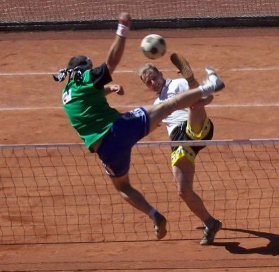
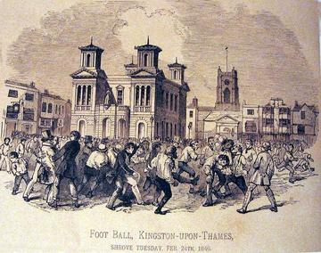
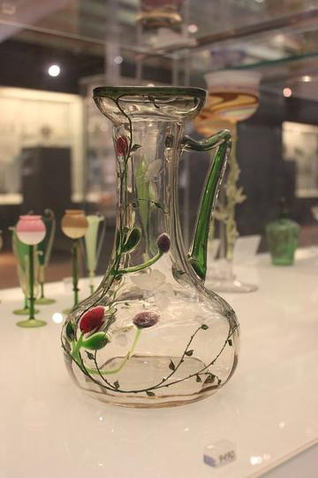
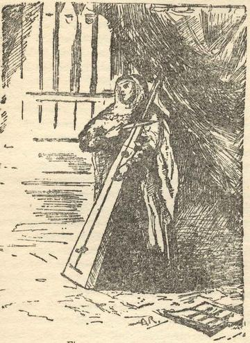

Home / Modern Heritage / Northern and Eastern Europe
Encyclopedia ID 378
Nohejbal
Also known as foot volleyball


Teams of 2-3 return a football over a tennis-style net using only feet, head and body, with up to three touches.
Heritage note
Part of the living heritage of Czechia.
Origins
Usually placed in the era of Modern Heritage (1800 to today), although its exact origins are uncertain, within the cultural world of Northern and Eastern Europe.
Sources
Related entries



Chapteh shuttlecock
Singapore · Dexterity and skill games
More from Czechia


Hose-Run Fire Sport
Czechia +1 · Dexterity and skill games
String Marionette Theatre
Czechia · Performance and storytellingPlay preview · in the Story & Theatre of the World app
Czech draughts
Czechia · Board and table games